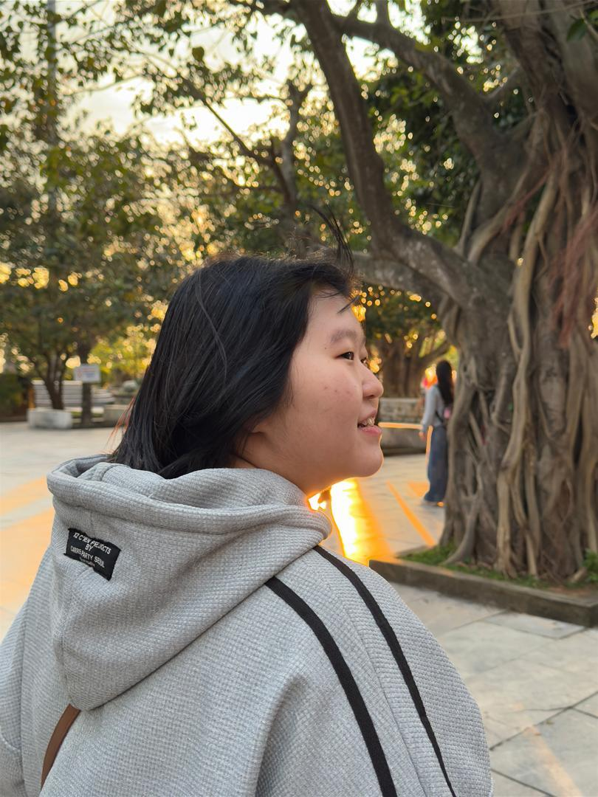

King Scout Award
Achieved the highest rank in scouting.
Learn More
Hi, I'm Teo Coyeen. I was born and raised in Alor Setar, Kedah. I am a Diploma in Information Technology student currently studying at Taylor's College.
During my secondary school years, I was actively involved in Scout activites and successfully earned the King Scout Award. In additional, I had the opportunity to participate in and help organize camping activities. These experiences strengthened my leadership, teamwork and communication skills.
As an IT student, I have gained knowledge in web development, programming and database systems. I have experience working with C Programming, Java and SQL through coursework. My goal is to continuously improve my technical skills and create meaningful digital experiences that are both functional and user-friendly.
Achieved the highest rank in scouting.
Learn MoreOrganized and participated in school camping activities.
Learn MoreCompleted Oracle Academy courses in Java Programming.
Learn More